| 日付 | 2015年11月28日（土） |
|---|---|
| 山域 | 丹沢 |
| メンバー | 家族（妻、長女・4歳、長男・2歳） |
| 山行形態 | 子連れ日帰り |
| アクセス | 車 |
| ルート (Map) | 寄 (8:25) - (9:28) 宮地山 (9:36) - (10:47) シダンゴ山 (11:47) - (13:16) 寄 |
しばらく遠くの山に行っていたので、久々に近場の丹沢に行ってみることにする。
シダンゴ山はコースが短く、周回コースがあり、登山口に駐車場があるという、
家族連れマイカー登山に最適な山である。5年半振り、3度目の方問だ。
寄の駐車場に車を停める。標高285m。
ここで偶然、旧友に出会う。日光白根山で偶然会って以来の再会だ。
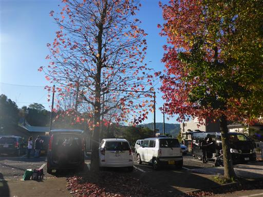
橋を渡って登山口に向かう。川の水がきれいだ。
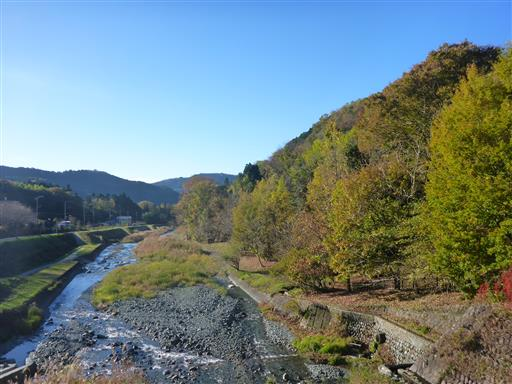
しばらく車道を歩いた後に、登山道に入って行く。
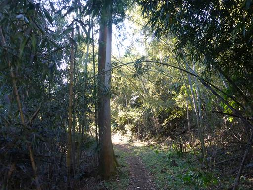
足元の雑草の葉は霜で白く染まっている。
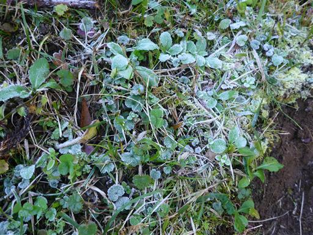
ススキが風に揺れている。
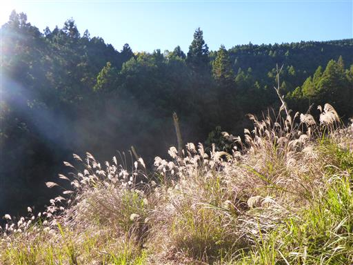
柿の木。
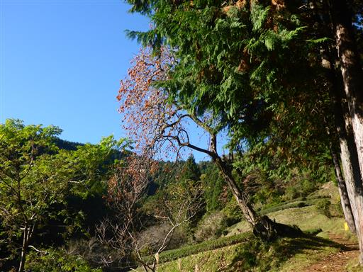
こちらはミカンの木。美味しそうな果物がたくさんあって、息子は嬉しそうだ。
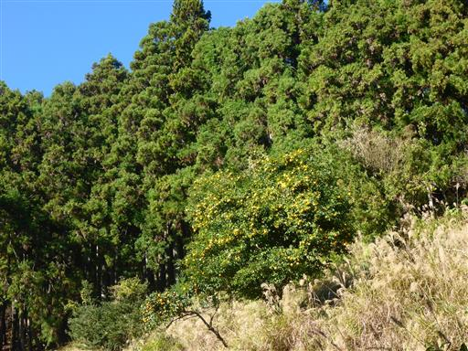
この辺りはお茶畑が広がっている。
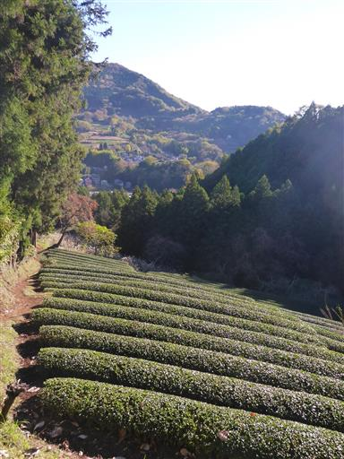
この辺りは畑が多いため、動物除けの柵が設置されている。
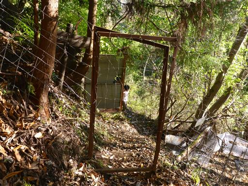
登山道分岐点から宮地山に寄り道する。標高512m。
特に何もない地味なピークだ。
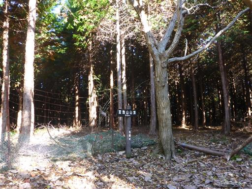
赤いサンゴのような枝が大量に地面に落ちている。何の木だろうか？
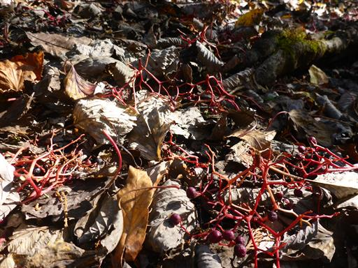
この辺りはまだ紅葉が残っている。遠くに僅かに海が見えている。
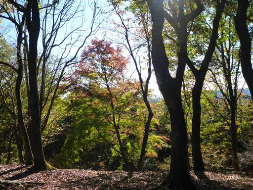
落ち葉がいっぱい積もっている。落ち葉を踏みしめた時の音が心地よい。

尾根が広いくなると、娘は走り出す。
先週登った御堂山に比べると、遥かに歩きやすい道だ。
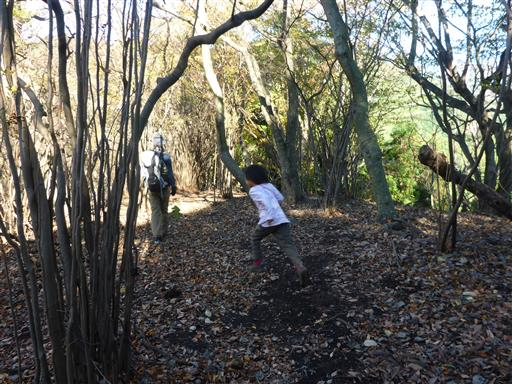
この辺りは薄暗い植林地帯が広がっている。
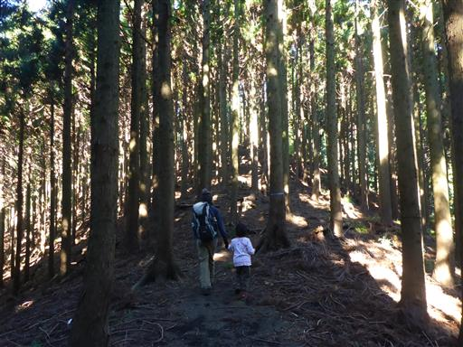
鉄塔。娘は東京タワー、息子は電線を見て電車と言っている。
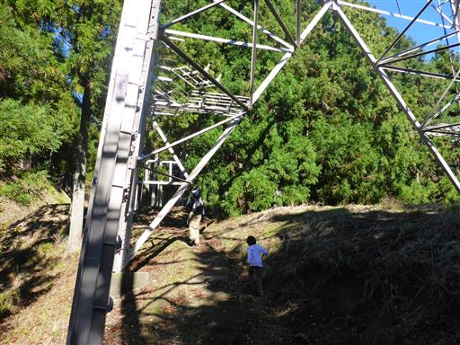
途中から車道が現れる。無粋な登山道だ。
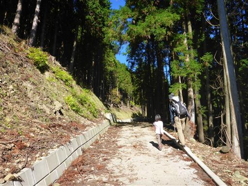
山頂に続く大きな尾根に到着する。ここから山頂まで残り僅かだ。
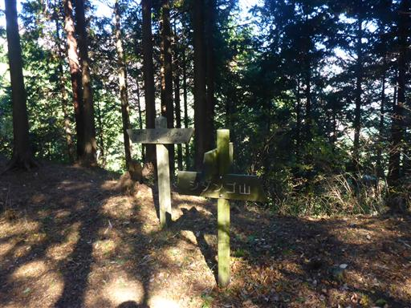
ここからは急な階段道。
これまでずっと緩やかだったのに、最後の坂だけきつい登りだ。
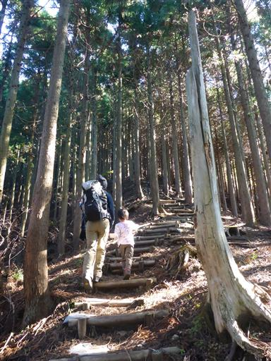
山頂付近に到着すると、暗い植林地帯が終わって一気に明るくなる。
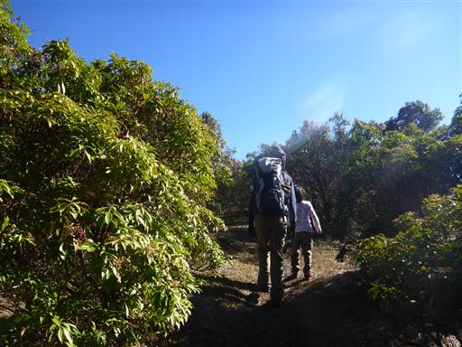
シダンゴ山の山頂に到着する。標高758m。
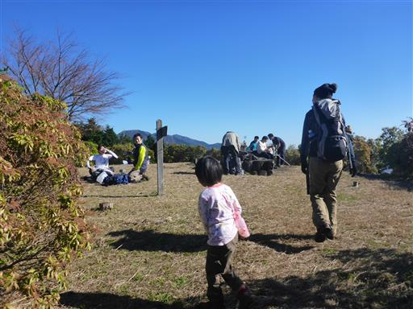
山頂からは富士山が半分だけ見える。
富士山を始め展望の良い山と思っていたが、残念ながらそれほどでもない。
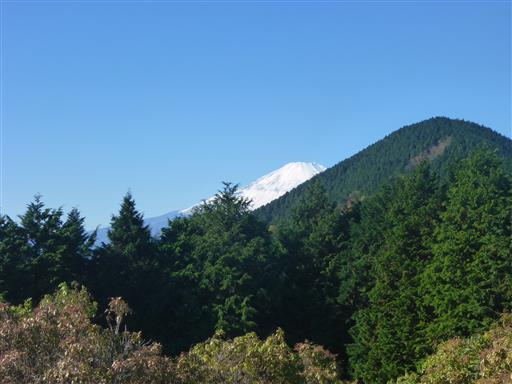
東側には丹沢の表尾根が良く見える。
残念ながら丹沢中心部の山々は樹木が邪魔してよく見えない。
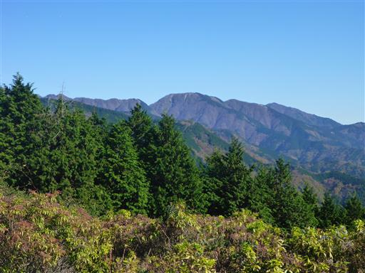
箱根の山々。噴煙っぽいものが薄ら見える。
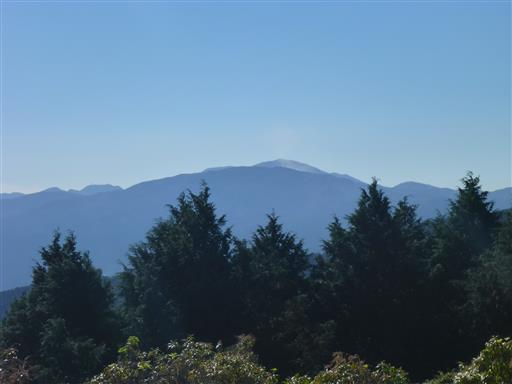
眼下に相模湾が見えている。
今日は非常に空気が澄んでいる。もっと展望の良い山に行けばよかったかも。
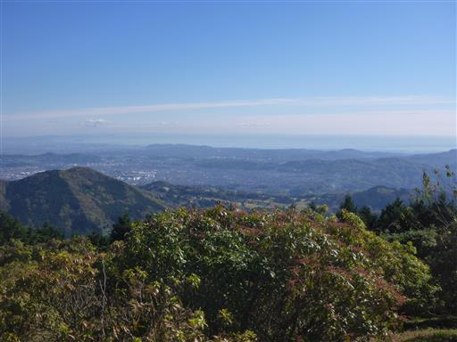
登山者で賑わう山頂で昼食をとる。
娘は卵の白身を先に食べて、大好きな黄身を残している。
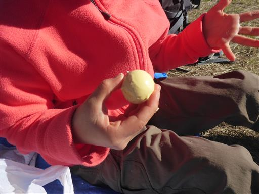
昼食をとったら下山開始。下りは息子も歩かせることにする。
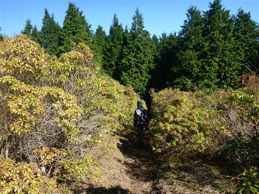
下りが得意な娘は速い。息子が歩いていると、なおさら速く歩いている気がする…
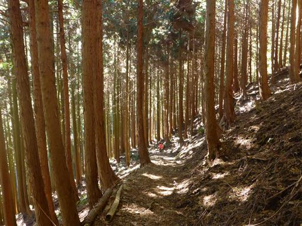
息子はゆっくりペースだが、頑張って歩いている。
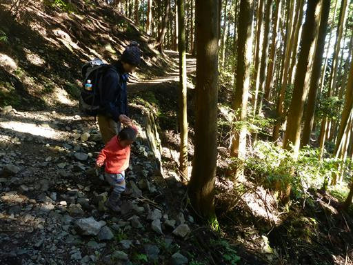
季節外れのスミレが咲いている。
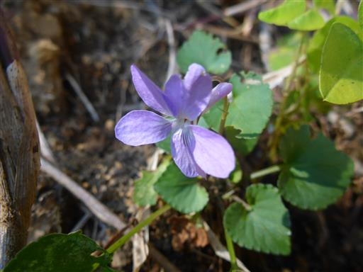
娘がトイレに行きたそうで、急いで駐車場に戻ろうとしたところ、
都合が良いことに、公衆トイレを見つける。
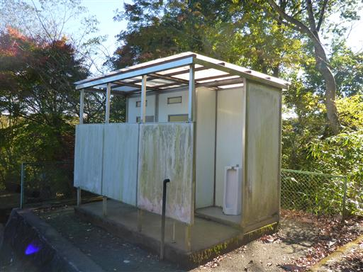
最後は車道をのんびり下って行く。息子は初めて下山を全て歩き通した。
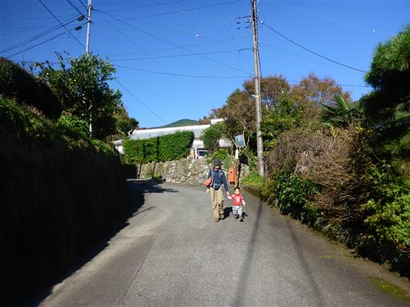
橋に設置された楽器で遊ぶ。
右から順番に叩いていくと、「お馬」の歌になる。
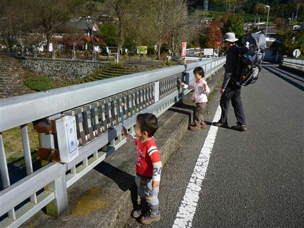
最後に河原に下りて、少し川で遊んでから帰る。
思ったほど展望の良い山ではなかったが、近場ののんびり登山を楽しめた。
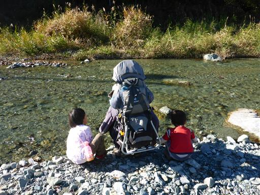